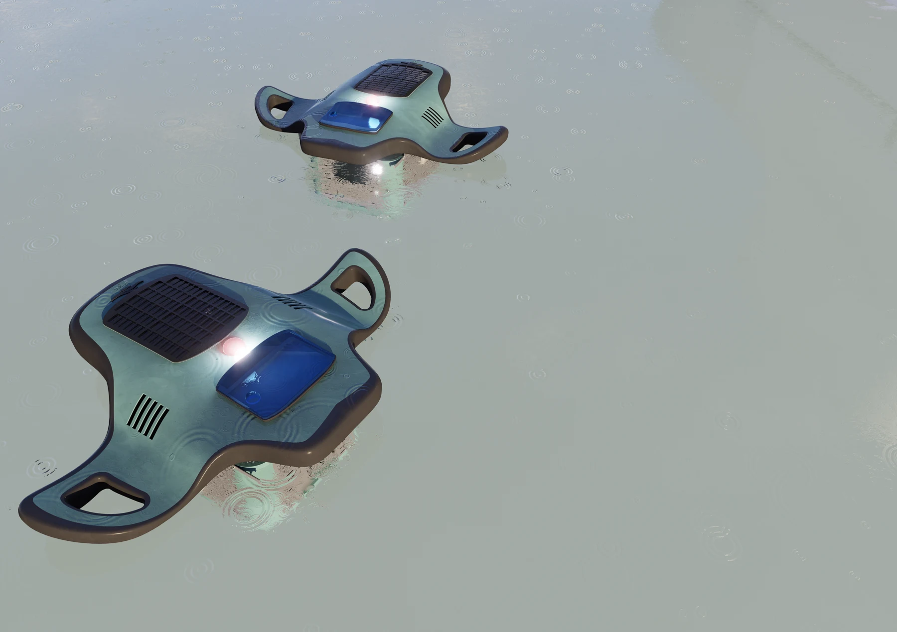
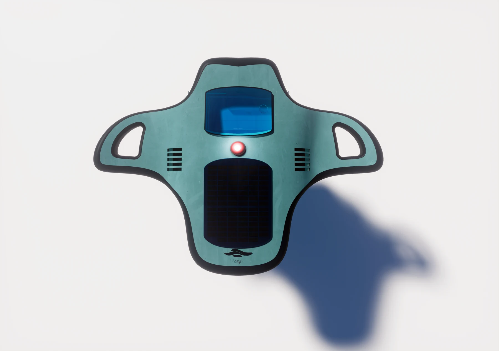
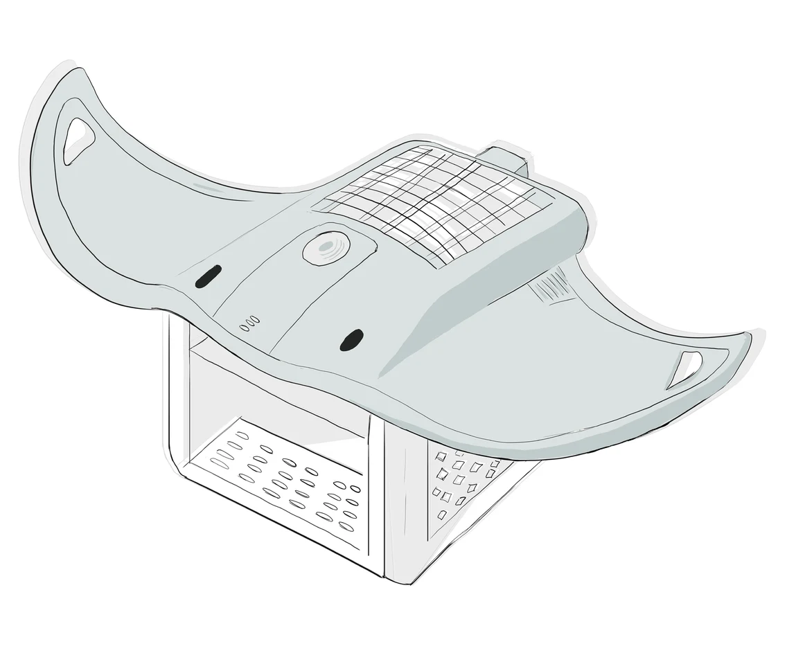

Diseño de producto
Aquaraya
Concepto de robot limpiador marítimo para recoger residuos en zonas costeras. La forma de la mantarraya inspira una estructura ancha y plana que busca facilitar el movimiento en el agua, la estabilidad y la recogida de basura flotante.
La propuesta integra un panel solar, propulsión por hélices y una cesta de recolección. El desarrollo conceptual explora un chasis de polietileno de alta densidad y una cesta de acero inoxidable perforado.





